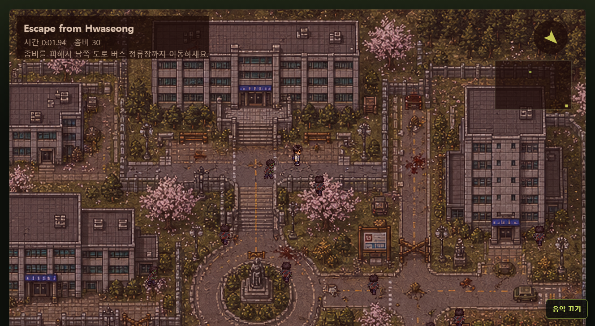
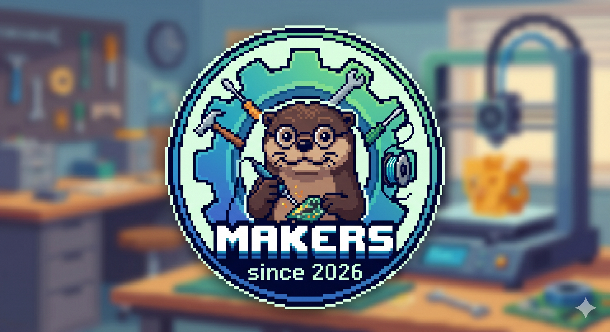
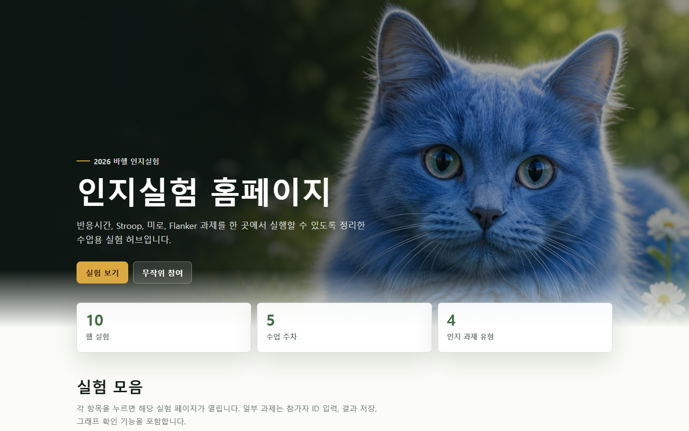
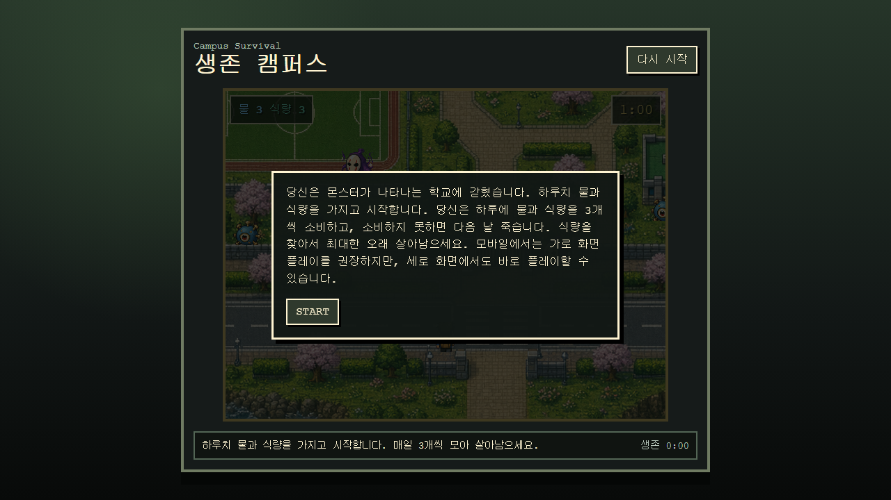
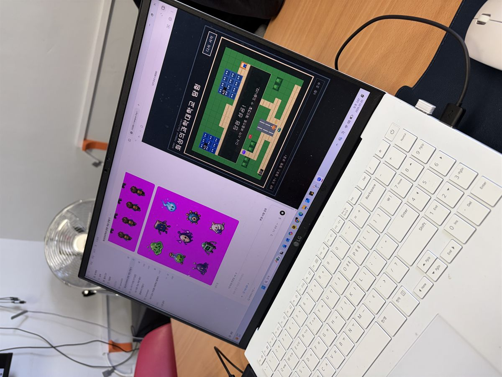
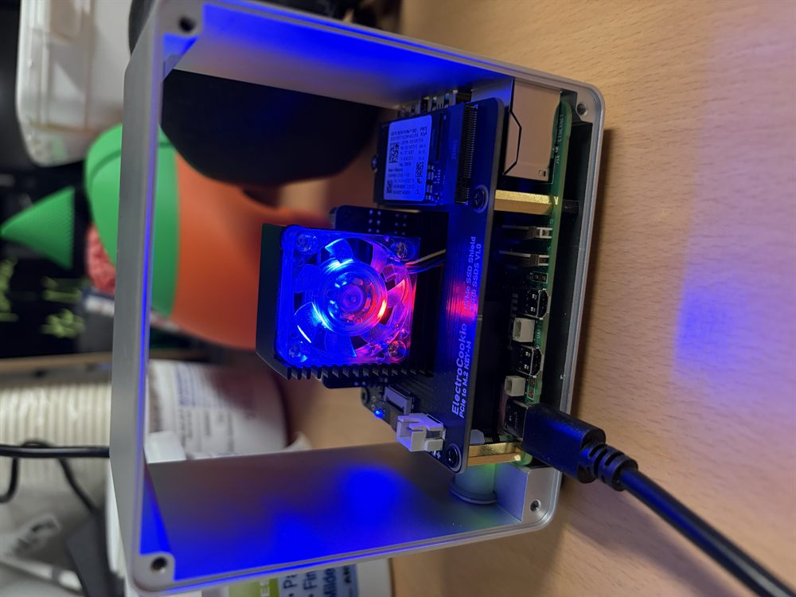
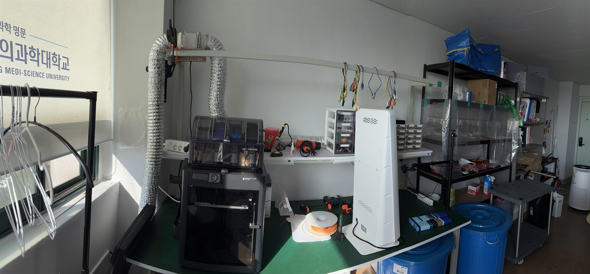
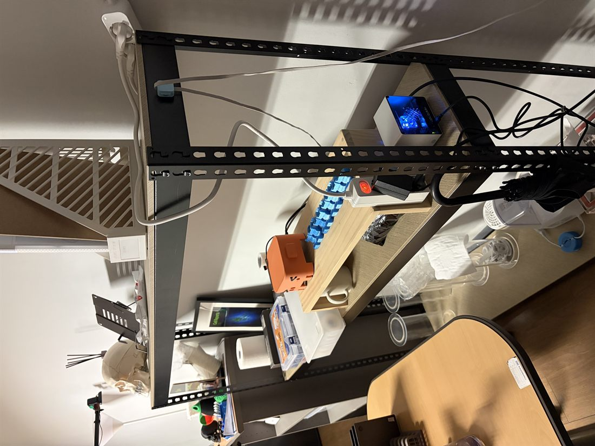
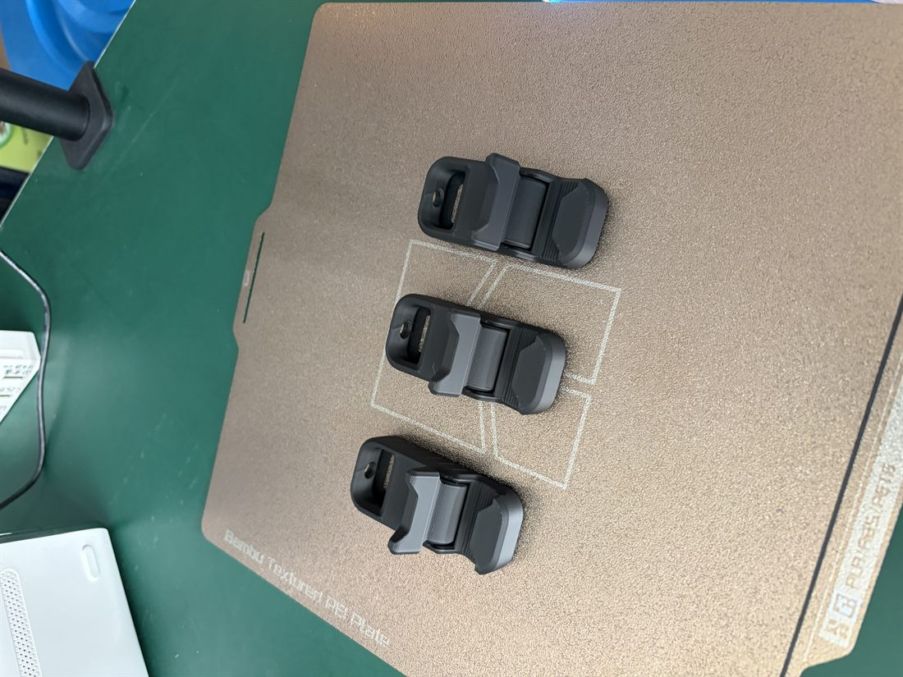
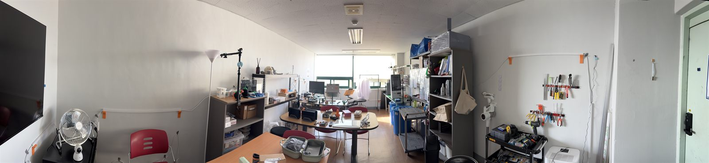

member work 01 / game
Escape from Hwaseong
화성의과학대학교를 배경으로 좀비를 피해 버스 정류장까지 탈출하는 웹 게임입니다. 캠퍼스 맵, 픽셀 캐릭터, 미니맵과 방향 표시까지 직접 구현한 첫 갤러리 작품입니다.
게임 플레이
Makers HSMU clubHwaseong Medi-Science University
바이브 코딩, 3D 프린터, 생성형 AI, 아두이노, 자동화 도구까지. 전공과 경험에 묶이지 않고 직접 실험해서 실제 결과물로 만드는 동아리입니다.
메이커스는 단순히 기술을 배우는 모임이 아닙니다. 아이디어를 제안하고, 작게 만들어보고, 실패를 기록하고, 다시 고쳐서 공유하는 창작형 기술 커뮤니티입니다.
무엇이든 만들어보는 문화member works
동아리 회원들이 만든 게임, 앱, 영상, 시제품을 모아두는 공간입니다.

member work 01 / game
화성의과학대학교를 배경으로 좀비를 피해 버스 정류장까지 탈출하는 웹 게임입니다. 캠퍼스 맵, 픽셀 캐릭터, 미니맵과 방향 표시까지 직접 구현한 첫 갤러리 작품입니다.
게임 플레이
member work 02 / experiment hub
반응시간, Stroop, 미로, Flanker 과제를 한 곳에서 실행할 수 있도록 정리한 수업용 실험 허브입니다. 과제별 페이지를 빠르게 열고 수업 주차별 실험을 안내할 수 있게 구성했습니다.
홈페이지 열기member work 03 / video
REMAZINE 채널의 YouTube 영상 작품입니다. 네온 드라이브 분위기의 비주얼과 사운드를 갤러리에서 바로 열어볼 수 있도록 연결했습니다.
영상 보기
member work 04 / survival game
몬스터가 나타나는 학교에서 하루치 물과 식량을 챙기며 버티는 생존형 웹 게임입니다. 밝고 귀여운 캠퍼스 그래픽, 자원 관리, 모바일 화면 전환을 고려한 플레이 흐름을 한 화면에 담았습니다.
게임 플레이linked pages
밋업 요약, 대시보드처럼 홈페이지 밖에서 운영되는 메이커스 관련 페이지를 모아둡니다.
what we touch
AI와 함께 아이디어를 빠르게 코드로 바꾸고, 작은 앱과 자동화 도구를 완성합니다.
스케치, 모델링, 출력, 후가공까지 직접 만져보며 물리적인 결과물을 만듭니다.
AI 이미지, 영상, 음악 생성 도구로 발표 자료와 프로젝트 시연 콘텐츠를 제작합니다.
센서, 보드, 출력 장치를 연결해 화면 밖에서 반응하는 프로토타입을 실험합니다.
반복 작업을 줄이고, 데이터 수집부터 문서화까지 실제로 쓸 수 있는 자동화 흐름을 설계합니다.






prototype log
메이커스의 산출물은 제안서, 콘솔형 웹앱, 프로토타입 영상, 시제품처럼 바로 보여줄 수 있는 형태를 지향합니다.
how we build
새 도구를 30분 안에 켜보고, 무엇을 만들 수 있는지 빠르게 확인합니다.
팀별로 작은 산출물을 정하고 코드, 모델, 영상, 회로 중 하나를 실제로 완성합니다.
실패한 부분까지 공개해 다음 실험의 재료로 남깁니다.
club operations
기존 일정 조율 앱을 홈페이지와 연결했습니다. 멤버별 가능 시간을 겹쳐 보고, 가장 많이 모일 수 있는 시간대를 빠르게 찾습니다.
Schedule Matrix 열기join makers
메이커스는 화성의과학대학교 재학생이라면 전공과 학년에 관계없이 함께할 수 있습니다. 기술을 처음 만져보는 사람도, 이미 만들고 싶은 것이 있는 사람도 환영합니다.